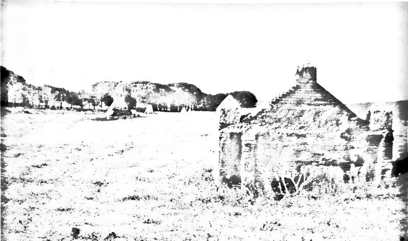
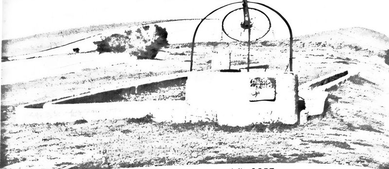
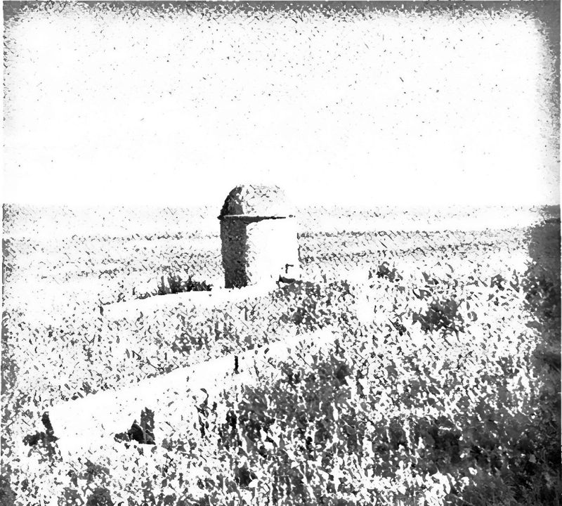
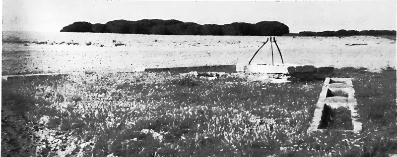
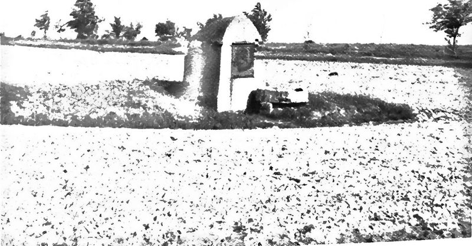
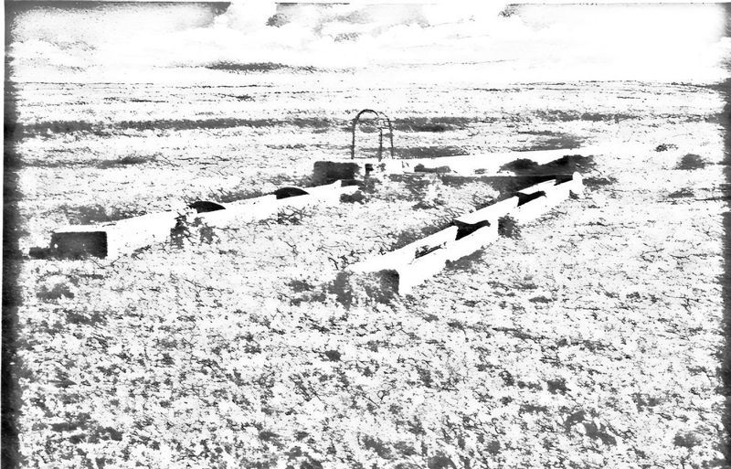
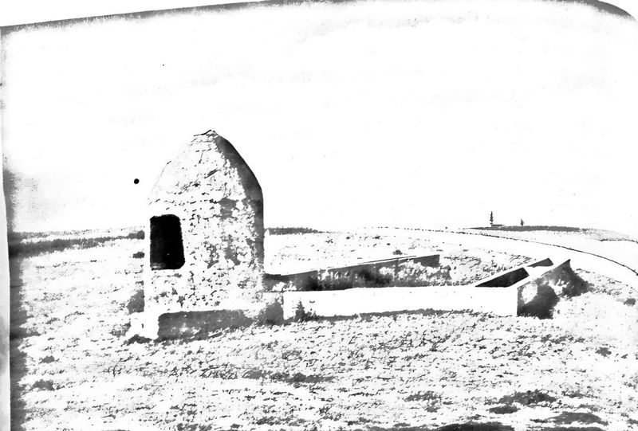

El agua del término y los pozos
Entre el Duero y el Trabancos, pero sin regar de ninguno: Alaejos ha vivido del agua de lluvia, de los lavajos y fuentes y, sobre todo, de los pozos. El inventario que hizo Antonio Lucas Varela de los que quedaban en 2017.
En esta página (8 apartados · 15 min de lectura)
Antonio Lucas Varela dedicó un apartado de Alaejos. Una antropología cultural (2024) a los «recursos hídricos» del término: lo que corre o se encharca en superficie, el acuífero que hay debajo y, uno por uno, los pozos que aún existían en 2017, con sus medidas, quién los picó, cuánto costaron y cuándo se limpiaron. Los datos de obras y pagos proceden, en buena parte, de las cuentas del Sindicato Agrícola y de la Junta Agropecuaria. Esta página los resume. El agua de boca del pueblo, el Caño y el Arca Madre, y los aguadores están en Oficios, agua y vida diaria.
Un pueblo pendiente del cielo
Alaejos está entre el Duero y el Trabancos y no aprovecha ninguno: el Duero queda lejos y más bajo, y el Trabancos es demasiado irregular. El campo ha dependido siempre de la lluvia, escasa y caprichosa, y de ahí las rogativas y los cirios a la Virgen de la Casita. Debajo, en cambio, está el acuífero de los Arenales, que Lucas llama «el mayor de España». Las lluvias de cada año desde 1940 están en El clima de Alaejos en datos.
El Trabancos
El río marca el límite del término por el sureste. Es un río de llanura que nace en la Moraña, cerca de Herreros de Suso (Ávila), a 1.100 metros, y desemboca en el Duero junto a Pollos tras 85 kilómetros. En verano se cortaba y dejaba pozas, unas grandes y hondas, que conservaban la vida del río y en las que hubo más de un ahogado. Fue un buen río de cangrejos: en el bar de Julián García, «Moroco», se comían por dos reales. Hoy está seco y sus alamedas retroceden: Lucas culpa al drenaje del cauce y a la crisis del acuífero.

Lavajos, fuentes y arroyos
El terreno, sin salida para el agua y con el acuífero cerca de la superficie, llenaba el término de lavajos, charcas de lluvia y de manantial que rara vez se secaban. Lucas llegó a contar treinta y seis, cada uno con el nombre de su pago; muchos han desaparecido por la sequía y la bajada del acuífero, o se desecaron para sembrar:
Las Brujas (desecado), Carreloslavajos (dos), la Casita (dos), el Castillo (desecado), la Cencerra (desecado), el Cristo (desecado), Don Carrión, Don Castellanos, Don Sancho, Doña Matías, las Estapias, las Flores, el Florido (desecado), el Gavilán, Hondo, la Legua, del Lugar (desecado), Matasapos, la Media Legua, Mediomundo, la Moheda, las Palomas, Pedro Mella, San Cristóbal, Santana, la Sartén, los Torrejones (desecado), los Toros, Tres Morros, Valdefuentes, Valdehalcón, la Vega (tres) y de la Vera.
De las fuentes, que daban de beber a la gente y a las mulas que pasaban el día en el campo, no queda ninguna. Lucas recuerda una veintena: el Abejón, el Borrego, el Caño, Carremedina, la Casita (en lo alto del pinar), el Castillejo, el Convento (canalizada dentro de la huerta que fue de Mauro Clavel, donde estuvo el convento franciscano), el Coplero, el Chato, el Duro, las Fuentecillas (el lavadero más famoso del pueblo), la Lelita, el Mimbral, el Moro, la Platera, las dos de la Pardilla (las mejores, por cantidad y calidad del agua), el Salto, el Tío Roquete, Valdebujeros, Valdefuentes (canalizada, abastecía al poblado desaparecido) y las Zorreras.


Los arroyos y regatos pasan de veinte, casi todos secos en verano. El principal es el de la Reguera, más torrentera que arroyo, que recoge el agua de medio término y en las tormentas ha inundado casas, huertas y sembrados. Los demás son los de Basilio, la Caba, Carrelanava, Carrelosmolinos, Carrezamora, la Cañadilla, las Castañas, la cueva Navajera, la fuente el Duro, la Garda, la Higuera, el Molino, las vegas de Morante, el Ortigal, Picazos o la Pitanza, la reguerita Tobal, el tío Roldán, el Soto, el teso de los Bolos, Trasierra, Valdefuentes, Valdehondillo, Valdevacas y los Vallicares. Una de esas crecidas de la Reguera, la de 1999, se cuenta en El término.

El agua de debajo
El término está casi en el borde norte del acuífero de los Arenales, sobre arenas y conglomerados de hace unos cuarenta millones de años que alcanzan hasta mil metros de espesor. Lucas toma los datos de la tesis doctoral de Agustín Senderos Domínguez (Universidad Complutense, 2001): en ese año se contaban en el acuífero más de 3.000 sondeos, de 50 a 300 metros de hondo, que sacaban entre 10 y 30 litros por segundo cada uno.
Como el agua estaba cerca, se podía llegar a ella a pico y pala, y así se hicieron tres clases de pozos:
- Los del campo, casi siempre con pilones para abrevar el ganado, que eran el agua de pastores, labradores y mulas.
- Los de las casas, en los corrales, con brocales de uno a dos metros y quince a veinte de hondo. Rara vez se secaban, y el agua se sacaba a mano, con polea y herrada.
- Los de las huertas y alcaceres de alrededor del pueblo, más anchos y hondos, de veinte a treinta metros, con norias de cangilones movidas por una caballería hasta bien entrado el siglo XX, cuando llegaron los motores eléctricos.
Todos empezaron a secarse con las perforaciones de hasta trescientos metros para los grandes regadíos, que según Lucas han llevado al acuífero «a una crisis que difícilmente superará».
Los pozos del campo, uno por uno
En 2017 quedaban en el término veintitrés pozos «picados» a mano, de los que tres estaban tapados y casi todos los demás secos. Lucas da para cada uno su sitio, sus medidas y su historia. Las pesetas son las de cada año.
- La Argentina o la Cueva Navajera
- Reguera arriba, a 400 metros de la casa de campo de la Argentina y a 4,5 km del pueblo. 17 metros de hondo y 1,20 de ancho, brocal de ladrillo y polea de rueda de bicicleta; la pila de granito la regaló Inocencio Caballero. Lo picaron en 1944, «el mal año», los hijos de Hilario Morales, por 50 duros y un costal de trigo que pagaron Pedro Abad Martín y Aquilino Hernández, «Camero». Se cayó dentro una mula, que sacaron viva, y Donato Casado casi se ahoga al dar un barreno del que salió agua en abundancia. Tiene metro y medio de agua.
- El Arrabal o de San Ignacio
- En el pueblo. Se llama de San Ignacio por las misiones del padre Patricio en 1943. Lo picaron en 1922 el Ayuntamiento, con el alcalde Victoriano Nieto, y el Sindicato Agrícola Católico, presidido por Pedro Morante Moyano. 10,5 metros de hondo. Tuvo una bomba manual hasta que en 1958 se le puso encima un depósito y se electrificó; en 1962 se rehicieron los pilones. Está seco y hoy da agua de la red del pueblo.
- El Pozo Viejo del Arrabal
- Anterior al de San Ignacio, hacia el número 18 de la calle del Arrabal (hubo otro en el centro de la calle). Era poco hondo y de agua fina. No tenía polea: cada vecino llevaba su cuerda y su herrada, y la cuerda fue abriendo una muesca en la piedra del brocal. Se tapó a comienzos del siglo XX y sus piedras se usaron para arreglar los accesos a San Pedro, donde aún se ven; las colocó el albañil Práxedes Ojeda siendo párroco Tomás Caballero.
- La Cabaña
- En el camino de la Cabaña, a 4 km hacia Castrejón. 10,25 metros, cervigal de ladrillo en capucha y 24 metros de pilones, muy estropeados. Lo picó en 1931 S. Santana por 202,43 pesetas, a 19,75 el metro; el ciento de ladrillos costaba 6 pesetas, el saco de cemento 7 y el quintal de cal 3. Seco.
- El Canto
- En el pago del Canto, a unos 6 km por la carretera de Salamanca. 21,70 metros. La polea cuelga de dos llantas de carro cruzadas. Lo picó en 1930 Julián del Castillo, a 21 pesetas el metro (455,70 en total), y los materiales los pagó el Sindicato. Seco.
- La Cañadilla
- Entre las carreteras de Salamanca y Vadillo, a 5,3 km, cerca del antiguo sendero del Horno, donde se coció la cal del cerro Calero para las iglesias. No hay datos de cuándo se hizo. Se tapó en el año 2000.
- Carrevadillo
- A 4,7 km por la carretera de Vadillo y 550 metros a la derecha. 17,5 metros de hondo y 2 de ancho, con brocal de sillares de granito unidos con lañas de hierro, pila de granito y dos pilones. Sin fecha, hacia 1910; Lucas lo cree de los más antiguos. Tiene algo de agua.
- La Casa Cuartel
- Tuvo noria con arcaduces que subía el agua a un depósito. Era agua buena para beber, y las mujeres iban a por ella con sus cacharros. Luego se ahondó y se le puso bomba eléctrica. Para bajar la bomba, purgarla y arreglar averías se contrataba a Nicolás González y Donato Casado por 250 pesetas al año, pagadas en dos plazos, por la Casita y por Navidad. Tapado.
- La Casita
- Junto a la ermita. Es rectangular, de 1,30 por 2,10 metros y 14 de hondo, forrado de piedra, con arcos que sostienen un cervigal en capucha y una pila ovalada de granito. Daba agua al ermitaño y a los peregrinos. Lucas lamenta una «desafortunada remodelación» reciente. Algo de agua.
- Las Castañas
- A 4 km, en el camino entre las carreteras de Vadillo y Salamanca. 13 metros, brocal de piedra y tres pilones en buen estado. Hacia 1910. Es el de historia más detallada: limpiezas y barrenos en 1932, 1934, 1938, 1953, 1954, 1955 y, la última, en 1979, que costó 60.000 pesetas. En la de 1954 salieron muchos cacharros de barro rotos, de cuando se sacaba el agua con ellos.
- El Cerezo
- En el kilómetro 3,4 de la carretera de Nava. 20 metros, cervigal en capucha. Picado en abril de 1931 por S. Santana por 385 pesetas, y ahondado en 1954 por Nicolás González y P. Muñoz. Seco.
- El lavajo de las Estapias
- A 250 metros de la N-620 por el camino de Carrezamora o de la Cruz. 18 metros. Se hizo en 1960 por 25.500 pesetas, con Bernabé Ojeda y Nicolás González de contratistas, con dos balsas, una para el ganado de labor y otra más baja para las ovejas, y un lavadero contra la sarna. La bomba eléctrica llenaba un depósito alto, que hoy es de la red del pueblo.
- El Lavajo del Lugar o Pozo Nuevo
- En la actual plaza de Hernández Morejón, junto a las escuelas de chicas, a las que mandaba el agua con una bomba manual. Tenía pilones para los animales. Lo picaron en 1900 Segundo del Castillo y sus hijos por 325 pesetas, y sustituyó a otro de agua insalubre que se tapó con la tierra sacada del nuevo. Tapado.
- El Hospital
- En la calle de la Casita, donde están las cocheras del centro de salud. Servía al antiguo hospital y a los vecinos. Tapado.
- Las Escuelas del Castillo
- En el patio del grupo escolar. Una cadena de cangilones entre dos poleas, que movían los propios alumnos, llenaba un depósito desde el que una bomba subía el agua a lo alto del edificio. Se tapó en 1945, siendo alcalde Macario Donato Vadillo, después de que un alumno se cayera dentro jugando en el recreo.
- La Lelita
- En el camino ancho de Medina, a 300 metros a la derecha. Se hizo en enero de 1930 en un terreno comprado a Justina Caballero por 100 pesetas; lo picó Julián del Castillo, a 21 pesetas el metro. 13,30 metros y brocal en capucha. Tapado.
- El Matadero
- En el actual número 13 de la calle del Matadero. Se tapó al cerrarse el matadero por insalubre.
- El prado de Carrealvar
- Se hizo en 1954, el año de las misiones del padre Moneo y de la bajada de la Virgen en rogativa por la sequía. Tuvo noria y luego bomba eléctrica, con balsa y pilones para las vacas y las mulas que se mandaban al prado municipal, pagando una cuota, al cuidado del vaquero. Tapado. La historia del prado está en El término.
- Las Peñuelas o Carrezamora
- Junto al camino de Carrezamora, a 2,7 km. 23 metros, el más hondo de los que mide Lucas. Lo picaron en 1958 Misael Martín Martín y Pablo Antoraz Caballero en 30 días, a 50 y 25 pesetas diarias; el contratista, Bernabé Ojeda, les dio 200 pesetas de propina por lo bien y rápido que lo hicieron. Seco.
- Sancierna o Valdedomingo
- A 1,2 km, en el camino hacia el Caño y la Argentina. 17,70 metros, brocal en capucha y dos pilones. Se hizo en 1925 y, por la calidad de su agua, se cuidó mucho: se limpió en 1931, 1933, 1934, 1945, 1950, 1953 y 1958. Seco.
- Santa María
- Junto a la torre de Santa María, con un pilón pegado al muro. Lo tapó el párroco Ausencio Pinilla para hacer una cochera; al derribarla en 1967 se puso una fuente.
- El Tablón
- A 5,6 km y 70 metros a la derecha de la carretera de Salamanca. 16,5 metros, con un pilón de 18,5. Lo picó Bernardo Sanjuán en 1951 por 4.800 pesetas; en 1967 se le añadieron pilones para las ovejas. Seco.
- Valdefuentes o los Cotos de Valdefuentes
- En el pago de la Majada, a 3,6 km por la carretera de Castrejón. 20 metros. Lo picaron en 1962 Julián García Losa, «Moroco», y su cuadrilla, los hermanos Plácido y Cecilio Vega, Ginés Caballero y Francisco Rodríguez, con un presupuesto de 11.000 pesetas. Seco.
- La Garda o Valdevacas
- A 4 km por la carretera de Castronuño, en terreno municipal cerca del campo de tiro. 13,20 metros, con los cuatro primeros forrados de ladrillo. Hacia 1920. En junio de 1938 apareció un hombre ahogado y se mandó agotarlo para limpiarlo. Tiene metro y medio de agua.
- Valgomaz o Valdeguzmán
- A 5,7 km por la carretera de Vadillo y 600 metros a la izquierda. 14,70 metros, con cervigal de sillares unidos con lañas. Sin fecha ni anejos. Seco.
- Valverde
- A 5,5 km por el camino de Carrezamora. Tiene una servidumbre de paso de 30 por 150 metros y un ejido de una fanega. 19 metros y 1,50 de ancho, brocal cuadrado de piedra y tres pilones. Hacia 1910. Seco.
















Cuando se limpiaba un pozo aparecían siempre en el fango restos de cántaros de barro y de vasijas de cobre o bronce. Se ataban con vencejos de centeno, zarcillos de vid u otras ataduras que se rompían con facilidad, y el cacharro se quedaba en el fondo.

Los pozos de la nieve
Hubo dos, y los dos se llenaban con el hielo del lavajo del Castillo. El primero era particular: lo picaron en 1946 Claudio Sevilla y Celestino Casado para Bernabé Ojeda e Hilario Monsalvo, que querían tener hielo en sus bares, y luego lo compró Inocencio Caballero por 1.000 pesetas. Tenía 7 metros de hondo y 3,5 de ancho, con un desagüe excavado en la peña del fondo para el agua del deshielo. Se echaban sarmientos en el fondo, encima los carámbanos del lavajo y se cubría todo con paja. Hoy está tapado dentro de una vivienda.
El segundo, municipal, estaba fuera de la Ronda del Castillo y se subastaba cada año: el 13 de junio de 1878 se adjudicó por 200 pesetas. El adjudicatario tenía que dar hielo gratis a los enfermos pobres con justificante del médico o del alcalde, venderlo como mucho a 0,75 pesetas la arroba, servir a los enfermos pudientes a cualquier hora y conservarlo hasta el final de octubre.
El cometa de 1910
Lucas recoge, a propósito del prado de Carrealvar, una anécdota: el 18 de mayo de 1910, cuando pasaba el cometa Halley, se tocaron las campanas para que la gente que estaba en el campo o en el prado volviera con el ganado, porque se decía que la cola del cometa tocaría la tierra y mataría a mucha gente.
Para seguir leyendo
- Antonio Lucas Varela, Alaejos. Una antropología cultural (Alaejos, Fundación Familia Hernández Puertas, 2024), capítulo I, «Los recursos hídricos», págs. 24-43.
- Agustín Senderos Domínguez, tesis doctoral sobre el acuífero de los Arenales (Universidad Complutense de Madrid, Facultad de Ciencias Geológicas, 2001), citada por Lucas.
- En esta web: Oficios, agua y vida diaria (el Caño, el Arca Madre y los aguadores) y Fotografías antiguas, con los pozos de la Argentina y de Sancierna en 1977 y 1997.
Cómo citar esta página
Amigos de Alaejos, «El agua del término y los pozos», https://www.amigosdealaejos.org/historia-del-pueblo/el-agua-y-los-pozos/ (revisión del 21/11/2026).